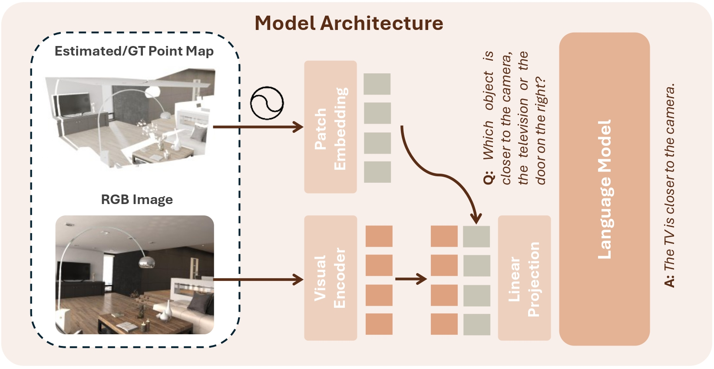

Abstract
Achieving human-like spatial intelligence for vision-language models (VLMs) requires inferring 3D structures from 2D observations, recognizing object properties and relations in 3D space, and performing high-level spatial reasoning. In this paper, we propose a principled hierarchical framework that decomposes the learning of 3D spatial understanding in VLMs into four progressively complex levels, from geometric perception to abstract spatial reasoning. Guided by this framework, we construct an automated pipeline that processes approximately 5M images with over 45M objects to generate 3D spatial VQA pairs across diverse tasks and scenes for VLM supervised fine-tuning. We also develop an RGB-D VLM incorporating metric-scale point maps as auxiliary inputs to further enhance spatial understanding. Extensive experiments demonstrate that our approach achieves state-of-the-art performance on multiple spatial understanding and reasoning benchmarks, surpassing specialized spatial models and large proprietary systems such as Gemini-2.5-pro and GPT-5. Moreover, our analysis reveals clear dependencies among hierarchical task levels, offering new insights into how multi-level task design facilitates the emergence of 3D spatial intelligence.
Large-Scale Hierarchical Spatial Dataset
Our automated pipeline constructs a dataset with 5M images, 45M objects, and over 2B VQA pairs. Explore the samples from different cognitive levels below.
Model Structure
We propose an RGB-D vision-language model that takes metric-scale monocular point maps as input, which can be derived from either depth estimators or ground-truth depth.

Model Inference Visualization
Explore how our model interacts with users and answers diverse 3D spatial queries based on the visual input.
Model Performance
Quantitative VQA Benchmarks (Level 1 & 2)
Qualitative VQA Benchmarks (Level 1-3)
Level Dependency Ablation
Inter-level task dependency analysis reveals that removing lower-level tasks during training consistently reduces higher-level performance.
Auxiliary 3D Input Ablation
Effect of integrating different auxiliary 3D representations. Our proposed absolute XYZ metric space yields significant improvements over standard RGB or relative depth.
BibTeX
@inproceedings{liang2026hispatial,
title={HiSpatial: Taming Hierarchical 3D Spatial Understanding in Vision-Language Models},
author={Liang, Huizhi and Shen, Yichao and Deng, Yu and Xu, Sicheng and Feng, Zhiyuan and Zhang, Tong and Liang, Yaobo and Yang, Jiaolong},
booktitle={Proceedings of the IEEE/CVF Conference on Computer Vision and Pattern Recognition (CVPR)},
year={2026}
}